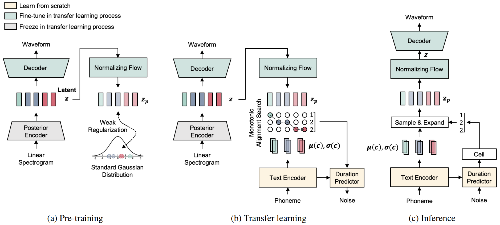

In this paper, we propose Language Adaptive VITS (LA-VITS), a novel approach designed to enhance the generalizability and scalability of neural text-to-speech (TTS) systems. We achieve this by employing a variational autoencoder (VAE) to learn a transferable latent representation. LA-VITS effectively mitigates the limitations posed by language dependence, which often arise when using a fixed set of text transcripts during the training phase. In the initial pre-training stage, our model adjusts the latent space to conform to a language-independent standard Gaussian distribution using a weak regularization technique based on normalizing flows. Then, we apply a transfer learning strategy to align this generalized latent representation with a text-conditioned prior. This process requires only a modest amount of text-speech pair data, yet consistently produces high-quality speech even for previously unseen languages. We test our proposed framework on various datasets, demonstrating its adaptability to diverse languages. This achievement establishes a strong foundation for the development of more versatile and robust multilingual TTS systems.
